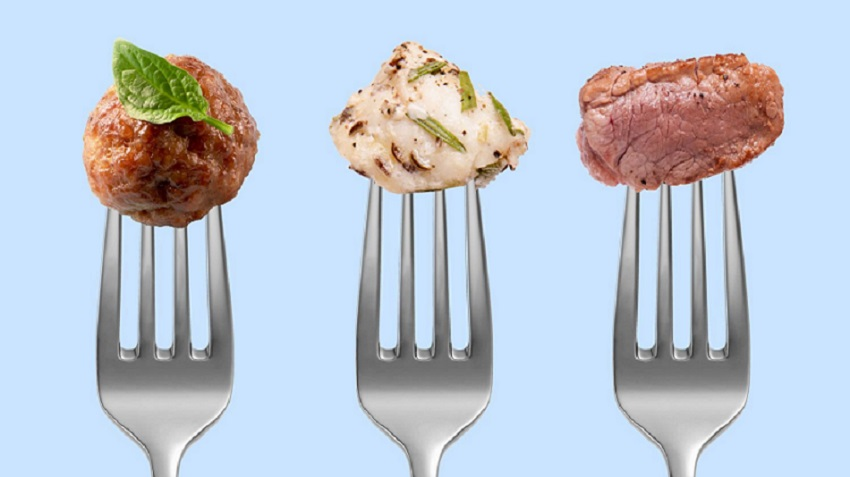
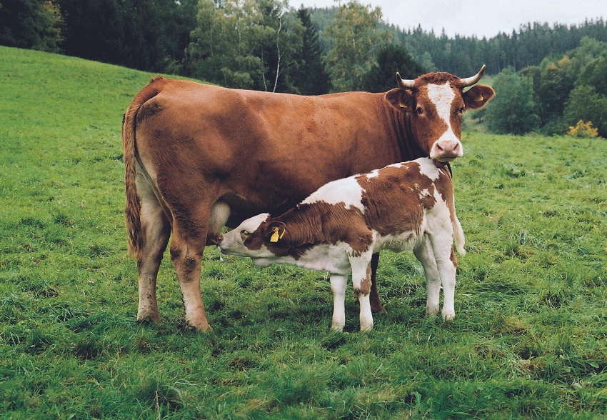
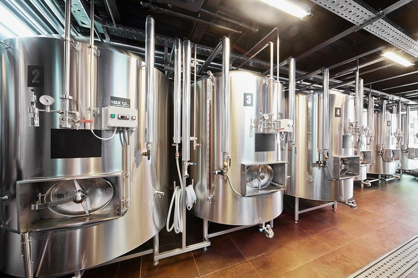

Carne de cultivo

¿Qué es la carne de cultivo?
La carne de cultivo es creada en laboratorios con el objetivo de alimentar a la población sin asesinar ganado

¿Cómo se produce la carne de cultivo?
Primero se toma cuidadosamente una muestra de tejido del animal de interés, luego se cultiva dicha muestra en un biorreactor
